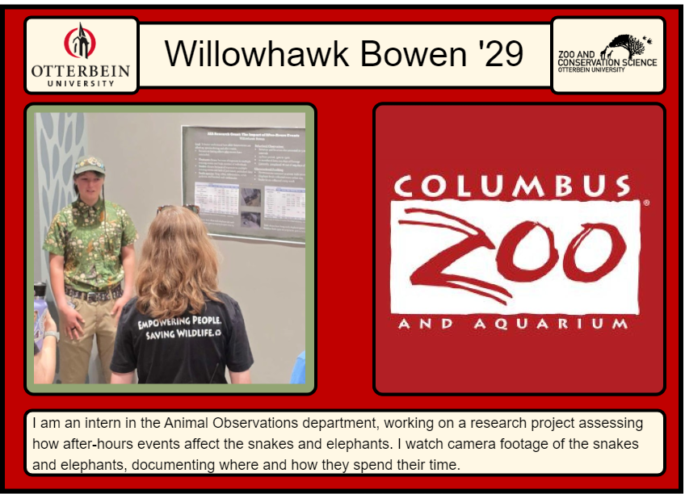
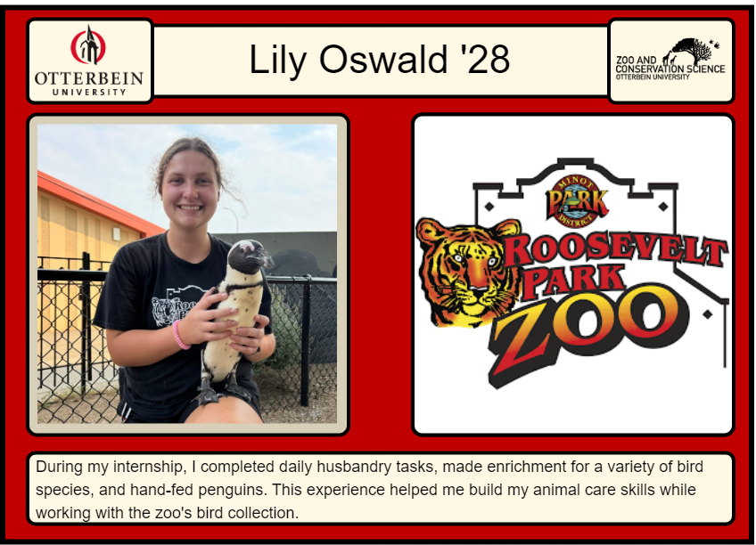

<!DOCTYPE html>
<html lang="en">
<head>
<meta charset="utf-8"/>
<style>body{background-color:white;}</style>
<link href="index_files/htmltools-fill-0.5.8.1/fill.css" rel="stylesheet" />
<script src="index_files/htmlwidgets-1.6.4/htmlwidgets.js"></script>
<script src="index_files/jquery-3.6.0/jquery-3.6.0.min.js"></script>
<link href="index_files/leaflet-1.3.1/leaflet.css" rel="stylesheet" />
<script src="index_files/leaflet-1.3.1/leaflet.js"></script>
<link href="index_files/leafletfix-1.0.0/leafletfix.css" rel="stylesheet" />
<script src="index_files/proj4-2.6.2/proj4.min.js"></script>
<script src="index_files/Proj4Leaflet-1.0.1/proj4leaflet.js"></script>
<link href="index_files/rstudio_leaflet-1.3.1/rstudio_leaflet.css" rel="stylesheet" />
<script src="index_files/leaflet-binding-2.2.3/leaflet.js"></script>
<script src="index_files/leaflet-providers-3.0.0/leaflet-providers.js"></script>
<script src="index_files/leaflet-providers-plugin-2.2.3/leaflet-providers-plugin.js"></script>
  <title>leaflet</title>
</head>
<body>
<div id="htmlwidget_container">
  <div class="leaflet html-widget html-fill-item" id="htmlwidget-9cf0cb0dc27327025f8a" style="width:100%;height:400px;"></div>
</div>
<script type="application/json" data-for="htmlwidget-9cf0cb0dc27327025f8a">{"x":{"options":{"crs":{"crsClass":"L.CRS.EPSG3857","code":null,"proj4def":null,"projectedBounds":null,"options":{}}},"calls":[{"method":"addProviderTiles","args":["CartoDB.Positron",null,null,{"errorTileUrl":"","noWrap":false,"detectRetina":false}]},{"method":"addCircleMarkers","args":[[40.156266,48.23382],[-83.118403,-101.27434],8,null,null,{"interactive":true,"className":"","stroke":true,"color":"#1e3a8a","weight":1.5,"opacity":0.5,"fill":true,"fillColor":"#3b82f6","fillOpacity":0.85},null,null,["<div style='font-family: system-ui, sans-serif; width: 220px; padding: 2px;'><h3 style='margin: 0 0 2px 0; color: #1e3a8a; font-size: 15px;'>Willowhawk Bowen<\/h3><p style='margin: 0 0 6px 0; color: #6b7280; font-size: 12px; font-weight: 600;'>Class of 2029<\/p><div style='border-top: 1px solid #e5e7eb; margin: 6px 0;'><\/div><p style='margin: 4px 0; font-size: 13px;'><b>Organization:<\/b> Columbus Zoo and Aquarium<\/p><p style='margin: 6px 0 0 0; font-size: 12px; line-height: 1.4; color: #374151;'>NA<\/p><\/div>","<div style='font-family: system-ui, sans-serif; width: 220px; padding: 2px;'><h3 style='margin: 0 0 2px 0; color: #1e3a8a; font-size: 15px;'>Lily Oswald<\/h3><p style='margin: 0 0 6px 0; color: #6b7280; font-size: 12px; font-weight: 600;'>Class of 2028<\/p><div style='border-top: 1px solid #e5e7eb; margin: 6px 0;'><\/div><p style='margin: 4px 0; font-size: 13px;'><b>Organization:<\/b> Roosevelt Park Zoo<\/p><p style='margin: 6px 0 0 0; font-size: 12px; line-height: 1.4; color: #374151;'>NA<\/p><\/div>"],null,null,{"interactive":false,"permanent":false,"direction":"auto","opacity":1,"offset":[0,0],"textsize":"10px","textOnly":false,"className":"","sticky":true},null]}],"limits":{"lat":[40.156266,48.23382],"lng":[-101.27434,-83.118403]}},"evals":[],"jsHooks":[]}</script>
<script type="application/htmlwidget-sizing" data-for="htmlwidget-9cf0cb0dc27327025f8a">{"viewer":{"width":"100%","height":400,"padding":0,"fill":true},"browser":{"width":"100%","height":400,"padding":0,"fill":true}}</script>
</body>
</html>
